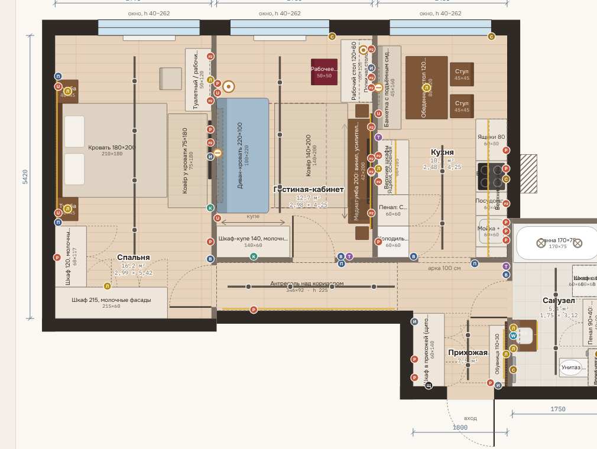
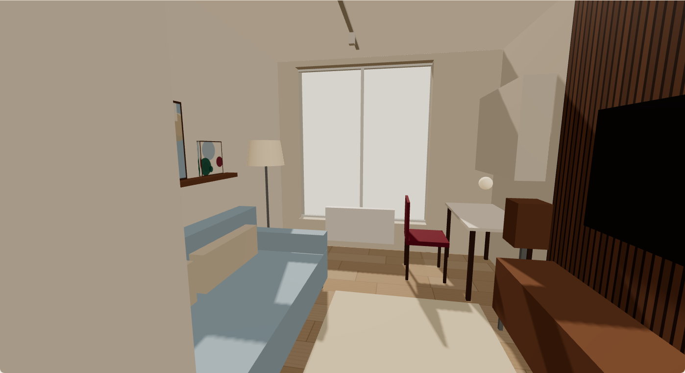
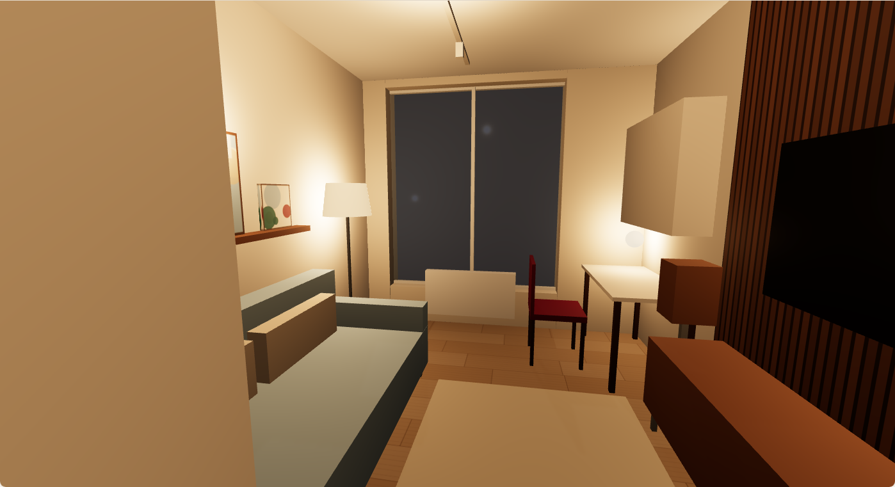
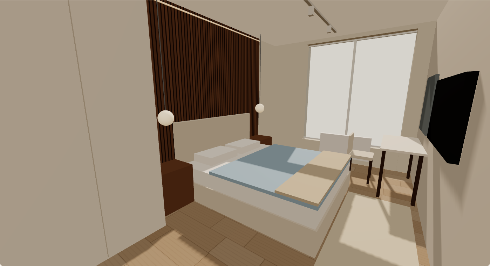
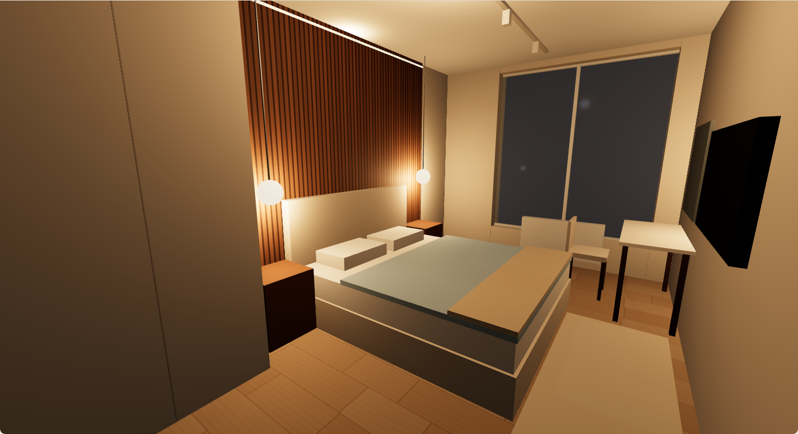
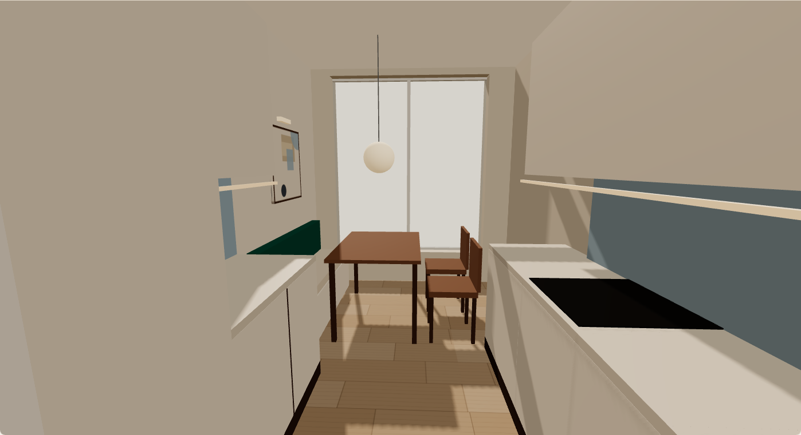
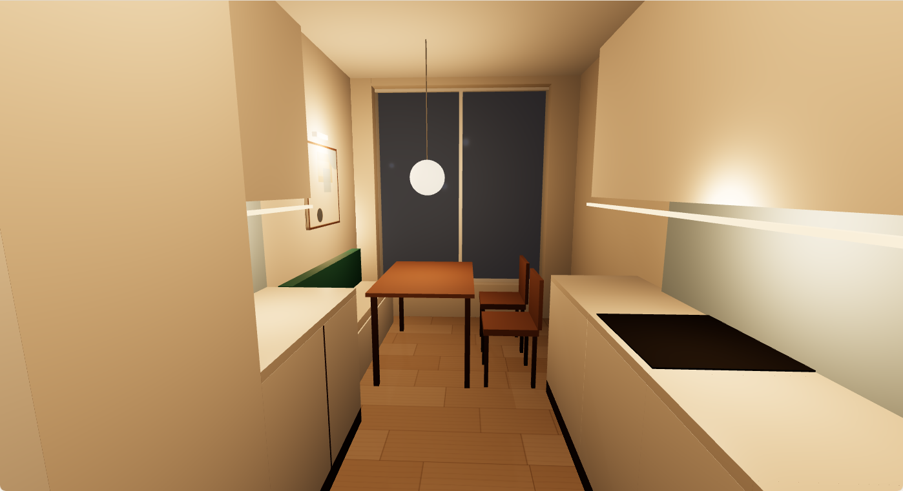
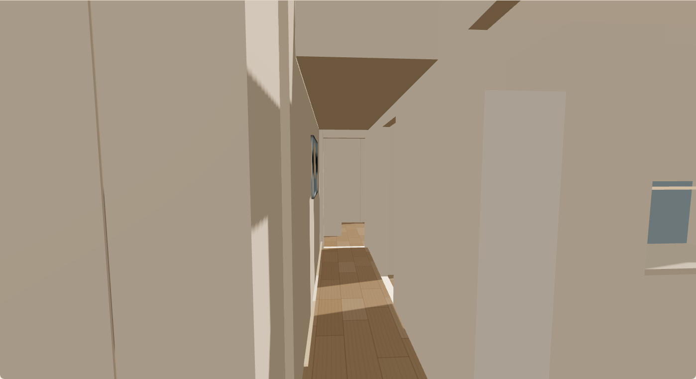
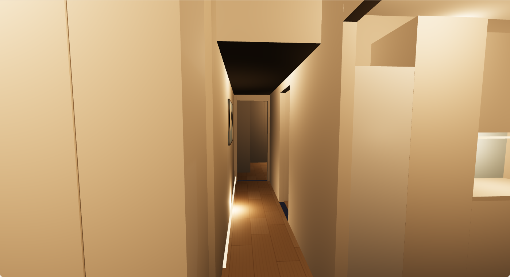

Это простая версия без скриптов, чтобы её могли прочитать люди и ИИ-ассистенты. Интерактивный план и 3D: главная страница.
00-plan

1-gostinaya-den

1-gostinaya-vecher

2-spalnya-den

2-spalnya-vecher

3-kuhnya-den

3-kuhnya-vecher

4-prihozhaya-den

4-prihozhaya-vecher

СтеныТёплый молочный во всей квартире. Основной фон. Ориентир NCS S 0804-Y30R.
Мебель и фасадыМолочные шкафы, кухня, обувница, столы. Сливаются со стенами и расширяют пространство.
ПолЛаминат «натуральный дуб» средней светлоты, тёплый, без рыжины. Связывает светлую базу с тёмными акцентами.
Табачный дубТолько акценты: стены за ТВ и за кроватью, медиатумба, тумбы, обеденный стол, тумба в ванной, рейки у зеркала.
Пыльно-голубойГлавный цвет: диван, покрывало, кухонный фартук, плитка у ванны, шторы.
ВишнёвыйТочками: рабочее кресло, абажур, подушки, обложки пластинок.
ИзумрудныйТочками: подушки на банкетке, ваза, кашпо, корешки книг.
Матовая стальСмесители, ручки, ножки, карнизы. Сатин или браш: на них почти не видно отпечатков.
Около 70% того, что видит глаз, молочное: стены, потолок, шкафы, кухня. Около 20% дерево: пол и несколько тёмных акцентов из табачного дуба. Около 10% цвет. Главный цвет пыльно-голубой, вишнёвый и изумрудный только точками, по одной-две вещи в комнате.
Пудрово-розовый я убрала: рядом с голубым и вишнёвым он выглядит четвёртым лишним. Если захочется мягкости, лучше взять ещё один оттенок молочного или песочный в текстиле.
По одному акценту на комнату. Так дуб видно, но он не съедает пространство.
База современная и простая: гладкие молочные фасады, тонкие стальные ручки, никакой лепнины. Семидесятые читаются по нескольким приёмам:
Для акцентов подойдёт табачный дуб, например «Дуб Галифакс табачный» (H1181) у Egger. Пол я сделала заметно светлее, в тон натурального дуба: при одинаковом тёмном полу и тёмной мебели квартира будет казаться меньше. Возьмите образцы и сравните днём у окна, рядом с образцом обоев.
| Предмет | Ш × Г × В, см | От пола | Материал |
|---|---|---|---|
| Кровать 180×200 | 210 × 180 × 45 | 0 | Лён молочный |
| Тумба | 45 × 40 × 55 | 0 | Дуб табачный |
| Тумба | 45 × 40 × 55 | 0 | Дуб табачный |
| Шкаф 120, молочные фасады | 117 × 60 × 260 | 0 | Молочный, в цвет стен |
| Шкаф 215, молочные фасады | 215 × 60 × 260 | 0 | Молочный, в цвет стен |
| Туалетный / рабочий стол 120×50 | 120 × 50 × 75 | 0 | Молочный, в цвет стен |
| Стул | 42 × 42 × 80 | 0 | Лён молочный |
| Зеркало над столом | 80 × 3 × 80 | 95 | Зеркало |
| Радиатор | 100 × 10 × 50 | 0 | Белый |
| Ковёр у кровати 75×180 | 180 × 75 × 1 | 0 | Шерсть молочная |
| Рейки за изголовьем | 280 × 4 × 270 | 0 | Рейки, дуб табачный |
| ТВ 50″ на стене | 112 × 6 × 65 | 100 | Графит (техника) |
| Предмет | Ш × Г × В, см | От пола | Материал |
|---|---|---|---|
| Диван-кровать 220×100 | 220 × 100 × 85 | 0 | Пыльно-голубой |
| Шкаф-купе 140, молочные фасады | 140 × 60 × 260 | 0 | Молочный, в цвет стен |
| Медиатумба 200: винил, усилитель, пластинки | 200 × 42 × 60 | 0 | Дуб табачный |
| ТВ 55″ | 124 × 6 × 72 | 100 | Графит (техника) |
| Проигрыватель | 42 × 36 × 14 | 60 | Графит (техника) |
| Колонка на стойке | 25 × 25 × 105 | 0 | Дуб табачный |
| Колонка на стойке | 25 × 25 × 105 | 0 | Дуб табачный |
| Рабочий стол 120×60 | 120 × 60 × 75 | 0 | Молочный, в цвет стен |
| Рабочее кресло | 50 × 50 × 90 | 0 | Вишнёвый велюр |
| Полки над столом | 120 × 25 × 90 | 120 | Молочный, в цвет стен |
| Ковёр 140×200 | 200 × 140 × 1 | 0 | Шерсть молочная |
| Радиатор | 100 × 10 × 50 | 0 | Белый |
| Рейки за медиазоной | 220 × 4 × 270 | 0 | Рейки, дуб табачный |
| Полка для картин и обложек | 180 × 12 × 4 | 120 | Дуб табачный |
| Ваша абстрактная картина | 50 × 4 × 60 | 124 | Картина |
| Обложка пластинки | 31 × 3 × 31 | 124 | Картина |
| Обложка пластинки | 31 × 3 × 31 | 124 | Картина |
| Предмет | Ш × Г × В, см | От пола | Материал |
|---|---|---|---|
| Картина над банкеткой | 70 × 3 × 70 | 118 | Картина |
| Ящики 80 | 80 × 60 × 90 | 0 | Молочный, в цвет стен |
| Варочная панель + духовка | 60 × 60 × 90 | 0 | Молочный, в цвет стен |
| Посудомойка 45 | 60 × 45 × 90 | 0 | Молочный, в цвет стен |
| Мойка + измельчитель + фильтр | 60 × 60 × 90 | 0 | Молочный, в цвет стен |
| Бутылочница 15 | 60 × 17 × 90 | 0 | Молочный, в цвет стен |
| Ящики, основная рабочая зона | 95 × 60 × 90 | 0 | Молочный, в цвет стен |
| Пенал: СВЧ и кладовая | 60 × 60 × 240 | 0 | Молочный, в цвет стен |
| Холодильник | 60 × 60 × 200 | 0 | Белый |
| Верхние шкафы | 262 × 35 × 95 | 145 | Молочный, в цвет стен |
| Аэрогриль | 35 × 32 × 35 | 90 | Графит (техника) |
| Кофемашина | 40 × 25 × 38 | 90 | Сталь матовая |
| Чайник | 20 × 18 × 25 | 90 | Сталь матовая |
| Банкетка с подъёмным сиденьем | 160 × 45 × 85 | 0 | Лён молочный |
| Обеденный стол 120×80 | 120 × 80 × 75 | 0 | Дуб табачный |
| Стул | 45 × 45 × 85 | 0 | Дуб табачный |
| Стул | 45 × 45 × 85 | 0 | Дуб табачный |
| Фартук: голубая плитка | 262 × 4 × 55 | 90 | Пыльно-голубой |
| Фартук: голубая плитка | 95 × 4 × 60 | 90 | Пыльно-голубой |
| Предмет | Ш × Г × В, см | От пола | Материал |
|---|---|---|---|
| Картина в коридоре | 90 × 3 × 70 | 120 | Картина |
| Шкаф для одежды в прихожей | 60 × 58 × 260 | 0 | Молочный, в цвет стен |
| Техшкаф: щиток, инвертор, батарея, роутер | 60 × 60 × 260 | 0 | Молочный, в цвет стен |
| Гибридный инвертор 10 кВт (на стене) | 50 × 22 × 70 | 110 | Графит (техника) |
| Батарея LiFePO4 10–15 кВт·ч (на полу) | 50 × 50 × 65 | 0 | Графит (техника) |
| Антресоль над коридором | 346 × 92 × 45 | 225 | Молочный, в цвет стен |
| Обувница 84×25 | 84 × 25 × 100 | 0 | Молочный, в цвет стен |
| Зеркало с фоновой подсветкой | 64 × 3 × 110 | 110 | Зеркало |
| Рейки за зеркалом | 99 × 4 × 270 | 0 | Рейки, дуб табачный |
| Предмет | Ш × Г × В, см | От пола | Материал |
|---|---|---|---|
| Ванна 170×75 | 170 × 75 × 58 | 0 | Белый |
| Тумба с раковиной 60 | 60 × 60 × 85 | 0 | Дуб табачный |
| Стирально-сушильная машина под столешницей | 60 × 60 × 85 | 0 | Белый |
| Столешница дуб над машиной | 60 × 60 × 5 | 85 | Дуб табачный |
| Зеркальный шкаф 120 с подсветкой | 120 × 14 × 70 | 115 | Зеркало |
| Короб инсталляции | 90 × 25 × 120 | 0 | Плитка молочная |
| Шкаф с бойлером над инсталляцией | 90 × 40 × 80 | 140 | Молочный, в цвет стен |
| Унитаз подвесной | 55 × 36 × 40 | 0 | Белый |
| Гигиенический душ | 10 × 4 × 15 | 80 | Сталь матовая |
| Пенал 50×35: химия, полотенца, коллектор отопления | 50 × 35 × 200 | 0 | Молочный, в цвет стен |
| Полотенцесушитель | 50 × 6 × 80 | 55 | Сталь матовая |
| Тип | Назначение | Высота, см | X, см | Y, см |
|---|---|---|---|---|
| Розетка | Розетка для пылесоса у двери | 30 | 297 | 395 |
| Проходной выключатель | Проходной выключатель у кровати | 70 | 6 | 78 |
| Розетка 2× + USB | Розетка 2× + USB у тумбы | 70 | 6 | 98 |
| Розетка 2× + USB | Розетка 2× + USB у тумбы | 70 | 6 | 340 |
| Проходной выключатель | Проходной выключатель у кровати | 70 | 6 | 358 |
| Розетка двойная | Розетки у туалетного стола (фен, лампа) | 85 | 297 | 40 |
| Розетка двойная | Розетки у стола: ноутбук, монитор, зарядки | 85 | 297 | 125 |
| Выключатель | Выключатель у двери: общий свет | 90 | 297 | 428 |
| Розетка | Внутри шкафа: выдвижная гладильная доска и отпариватель | 100 | 4 | 425 |
| Розетка двойная | Розетки за ТВ: ТВ и приставка | 110 | 297 | 205 |
| Розетка | Запасная розетка за ТВ (вторая приставка, медиаплеер) | 110 | 297 | 180 |
| Слаботочка (LAN, ТВ, домофон) | LAN и антенна за ТВ | 110 | 297 | 232 |
| Вывод под свет | Подсветка зеркала | 175 | 297 | 85 |
| Кондиционер | Кондиционер: питание и трасса | 230 | 297 | 330 |
| Вывод под свет | Подсветка шкафа (по желанию) | 240 | 100 | 480 |
| Вывод под свет | Вывод в потолке под подвес над тумбой | 270 | 24 | 107 |
| Вывод под свет | Вывод в потолке под подвес над тумбой | 270 | 24 | 332 |
| Тип | Назначение | Высота, см | X, см | Y, см |
|---|---|---|---|---|
| Розетка двойная | Розетки под столом: компьютер, ИБП, удлинитель с выключателем | 30 | 605 | 80 |
| Розетка двойная | Проигрыватель и усилитель (в тумбе). Рядом каналы под акустический кабель к колонкам | 30 | 605 | 175 |
| Розетка двойная | Розетки в тумбе: приставка 1 и приставка 2 | 30 | 605 | 260 |
| Розетка двойная | Розетки в тумбе: саундбар или сабвуфер, роутер-усилитель | 30 | 605 | 340 |
| Розетка 2× + USB | Розетка у дивана (USB-A + USB-C) | 30 | 311 | 110 |
| Розетка | Розетка под торшер: включается выключателем у двери | 30 | 311 | 92 |
| Розетка 2× + USB | Розетка у дивана (USB-A + USB-C) | 30 | 311 | 350 |
| Розетка двойная | Розетки над столом | 85 | 605 | 26 |
| Слаботочка (LAN, ТВ, домофон) | Интернет у стола | 85 | 605 | 62 |
| Розетка двойная | Розетки над столом | 85 | 605 | 100 |
| Выключатель | Выключатель: общий свет и подсветка | 90 | 547 | 423 |
| Терморегулятор тёплого пола | Терморегулятор тёплого пола | 90 | 563 | 423 |
| Розетка двойная | Розетки за телевизором: ТВ и запас. Рядом труба Ø50 мм в стене до тумбы под HDMI-кабели | 110 | 605 | 235 |
| Слаботочка (LAN, ТВ, домофон) | LAN и ТВ-антенна за телевизором | 110 | 605 | 262 |
| Кондиционер | Кондиционер над шкафом | 230 | 380 | 423 |
| Силовой вывод / кабель | Вывод под электрокарниз (по желанию) | 262 | 530 | 2 |
| Тип | Назначение | Высота, см | X, см | Y, см |
|---|---|---|---|---|
| Силовой вывод / кабель | Варочная панель: кабель 3×6 мм², автомат 32 А | 20 | 871 | 275 |
| Розетка | Холодильник | 30 | 619 | 395 |
| Розетка | Духовой шкаф: отдельная линия 16 А | 30 | 871 | 220 |
| Розетка | Посудомойка (в модуле мойки) | 40 | 871 | 358 |
| Розетка | Измельчитель отходов: отдельная розетка с УЗО, пневмокнопка на столешнице | 40 | 871 | 375 |
| Розетка | Фильтр обратного осмоса с помпой | 40 | 871 | 392 |
| Выключатель | Выключатель: общий свет и подвес над столом | 90 | 690 | 420 |
| Терморегулятор тёплого пола | Терморегулятор тёплого пола | 90 | 806 | 420 |
| Розетка 2× + USB | USB-розетка над банкеткой (телефоны) | 95 | 637 | 150 |
| Розетка двойная | Аэрогриль и кофемашина: отдельная линия 16 А | 110 | 619 | 230 |
| Розетка двойная | Чайник и мелкая техника: вторая линия 16 А | 110 | 619 | 280 |
| Розетка двойная | Розетки над столешницей | 110 | 871 | 322 |
| Вывод под свет | Вывод под настенный светильник над столешницей | 155 | 619 | 255 |
| Розетка | Вытяжка | 220 | 871 | 255 |
| Силовой вывод / кабель | Вывод под электрокарниз (по желанию) | 262 | 835 | 2 |
| Вывод под свет | Подвесной светильник над столом | 270 | 725 | 100 |
| Тип | Назначение | Высота, см | X, см | Y, см |
|---|---|---|---|---|
| Розетка | Станция робота-пылесоса: открытая ниша внизу шкафа | 15 | 688 | 575 |
| Розетка | Розетка в коридоре (пылесос) | 30 | 380 | 525 |
| Розетка | Розетка у обувницы: сушилка для обуви | 30 | 830 | 642 |
| Инвертор и резервное питание | Батарея LiFePO4: короткий кабель к инвертору через DC-автомат | 40 | 715 | 620 |
| Выключатель | Блок у входа: свет прихожей, свет и вентиляция санузла | 90 | 835 | 446 |
| Терморегулятор тёплого пола | Терморегулятор тёплого пола санузла | 90 | 835 | 536 |
| Проходной выключатель | Проходной выключатель коридора | 90 | 548 | 437 |
| Проходной выключатель | Проходной выключатель коридора | 90 | 803 | 437 |
| Розетка | В шкафу: зарядка вертикального пылесоса | 100 | 688 | 550 |
| Инвертор и резервное питание | Гибридный инвертор 10 кВт: вход от вводного автомата, выход на секцию «от инвертора» | 150 | 688 | 615 |
| Слаботочка (LAN, ТВ, домофон) | Домофон | 150 | 848 | 643 |
| Вывод под свет | Вывод за зеркалом под фоновую подсветку (блок питания в обувнице) | 150 | 849 | 598 |
| Электрощиток | Электрощиток в нише справа от входа, внутри техшкафа. Две секции: «от инвертора» и «только от сети», ручной байпас | 180 | 715 | 643 |
| Слаботочка (LAN, ТВ, домофон) | Роутер, ONT и домофон: питание от инвертора, интернет работает при отключениях | 200 | 688 | 598 |
| Тип | Назначение | Высота, см | X, см | Y, см |
|---|---|---|---|---|
| Вывод под свет | Вывод под ленту под тумбой (по желанию) | 20 | 998 | 460 |
| Силовой вывод / кабель | Электрический полотенцесушитель | 60 | 868 | 575 |
| Розетка IP44 (влагозащ.) | Стирально-сушильная машина: IP44, УЗО 10 мА, отдельная линия | 100 | 1054 | 553 |
| Розетка IP44 (влагозащ.) | Розетка в зеркальном шкафу (щётка, фен) | 120 | 1054 | 505 |
| Вывод под свет | Подсветка зеркального шкафа | 190 | 1054 | 470 |
| Розетка IP44 (влагозащ.) | Бойлер в шкафу над инсталляцией: отдельная линия 16 А | 200 | 1054 | 600 |
| Силовой вывод / кабель | Вытяжной вентилятор в канал | 250 | 1040 | 628 |
Люстр нет. В каждой комнате два-три сценария: общий свет с треков, мягкий тёплый (торшер, подвесы, ленты за рейками) и рабочий (лампа, подсветка столешницы и зеркала). Свет 2700–3000 K, с диммером в комнатах. Все треки врезные магнитные 48 V в подвесном потолке, в санузле компоненты не ниже IP44.
| Светильник | Описание | Высота, см | Длина, см |
|---|---|---|---|
| Подвесной светильник | Подвес над левой тумбой: опаловый шар Ø20 | 120 | — |
| Подвесной светильник | Подвес над правой тумбой: опаловый шар Ø20 | 120 | — |
| LED-лента | LED-лента сверху за рейками изголовья | 265 | 280 |
| Встроенный магнитный трек | Встроенный трек: общий свет, споты на шкаф и туалетный стол | 270 | 380 |
| Светильник | Описание | Высота, см | Длина, см |
|---|---|---|---|
| Встроенный магнитный трек | Встроенный трек: мягкий общий свет, споты на картину и шкаф | 270 | 300 |
| Торшер (через розетку) | Торшер с тканевым абажуром: розетка включается выключателем у двери | 155 | — |
| Бра / подсветка картины | Подсветка картины над диваном | 195 | — |
| LED-лента | LED-лента в профиле над рейками ТВ-зоны: тёплый свет скользит вниз по дереву | 265 | 220 |
| Настольная лампа | Настольная лампа на рабочем столе | 110 | — |
| Светильник | Описание | Высота, см | Длина, см |
|---|---|---|---|
| Встроенный магнитный трек | Встроенный трек над рабочей зоной: споты на обе столешницы | 270 | 205 |
| LED-лента | LED-лента в профиле под верхними шкафами, тёплая 3000 K | 140 | 262 |
| Бра / подсветка картины | Настенный светильник над столешницей с техникой | 155 | — |
| Подвесной светильник | Подвес над столом: молочный шар Ø30 | 160 | — |
| Бра / подсветка картины | Подсветка картины над банкеткой | 195 | — |
| Светильник | Описание | Высота, см | Длина, см |
|---|---|---|---|
| Встроенный магнитный трек | Встроенный трек вдоль коридора: 3–4 поворотных спота, один на картину | 270 | 320 |
| Встроенный магнитный трек | Встроенный трек у входа: спот на шкаф и линейный модуль над зеркалом | 270 | 95 |
| LED-лента | Ночная подсветка у пола с датчиком движения | 15 | 330 |
| LED-лента | Зеркало с фоновой подсветкой: LED-лента по контуру сзади | 165 | 60 |
| Светильник | Описание | Высота, см | Длина, см |
|---|---|---|---|
| Встроенный магнитный трек | Встроенный трек: 3 светильника, компоненты не ниже IP44 | 270 | 195 |
| Встроенный светильник | Встроенный светильник IP65 над ванной | 270 | — |
| Встроенный светильник | Встроенный светильник IP65 над ванной | 270 | — |
| LED-лента | Подсветка под тумбой, ночной свет (по желанию, IP65) | 15 | 56 |
X и Y отсчитываются от левого верхнего внутреннего угла спальни (стена с окнами сверху). Точки можно двигать на плане, таблица обновится сама.